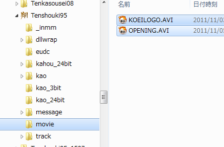

天翔記内に元々ある動画、及び、ユーザー独自の動画を再生するAPIです。
このAVIファイルは無圧縮でももちろん再生可能ですが、一番妥当性が高いのは、
天翔記で利用可能な.AVIフォーマットへの変換方法 による変換でしょう。
フルパスを指定して再生するわけではありません。「天翔記サブフォルダ」の下の「movie」フォルダが再生対象となります。

動画再生("動画名", オプション)
動画再生("KOEILOGO"); // 間違えて KOEILOGO.AVI と「拡張子を間違えて付けやすい」ので注意
動画再生("KOEILOGO", 動画::黒背景ＯＮ); // KOEILOGO.AVI を黒バックで再生する。黒バック付がデフォルトの挙動。
動画再生("MYMOVIE", 動画::黒背景ＯＦＦ); // MYMOVIE.AVI(という自分で用意したAVI)を、黒バックにせずに、再生する。
動画再生("HOGEHOGE", 動画::ＢＧＭ継続); // HOGEHOGE.AVI(という自分で用意したAVI)を、再生する。再生する際に、それまで流れているＢＧＭを停止せずに継続したままとする。
動画再生("MYHOGE", 動画::黒背景ＯＦＦ|動画::ＢＧＭ継続); // MYHOGE.AVI(という自分で用意したAVI)を、再生する。
// 再生する際に、黒バックにせずに、かつ、それまで流れているＢＧＭを停止せずに継続したままとする。
普通にC++で、文字列リストと乱数を使って実現しても良いですが、
以下のような方法で簡単に実現する方法が提供されています。
void カスタム::On_相場変更直前() {
デバッグ出力 << "相場変更が来た" << endl;
// 正規表現を使ったランダム再生。「movie\my_abc_***.avi」というパターンを満たす動画から１つをランダムで再生する
動画再生("my_abc_.+");
// ローカルの天翔記フォルダ内に見つからない場合は、CD側のmovieフォルダにアクセス(仮想化されていたら仮想ドライブ)して探そうとするので注意
// 動画ファイルが存在すると確信している場合に利用することを強く推奨する。
}
動画に関する主な所は以上となります。 詳しくは「動画情報型.h」や「動画情報列挙.h」などを参照してください。